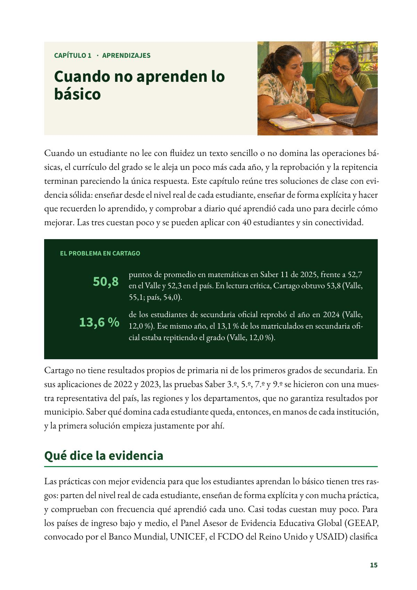
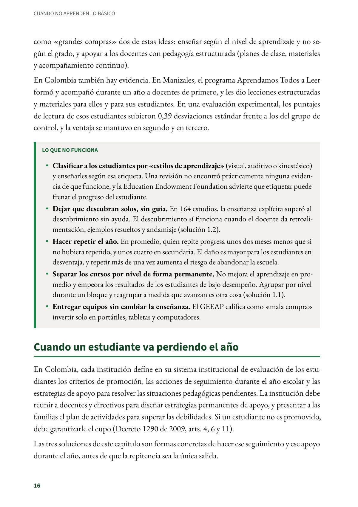

Cuando no aprenden lo básico
Cuando un estudiante no lee con fluidez un texto sencillo o no domina las operaciones básicas, el currículo del grado se le aleja un poco más cada año, y la reprobación y la repitencia terminan pareciendo la única respuesta.
PDF · 3 págs. · 801 KBCuando un estudiante no lee con fluidez un texto sencillo o no domina las operaciones básicas, el currículo del grado se le aleja un poco más cada año, y la reprobación y la repitencia terminan pareciendo la única respuesta. Este capítulo reúne tres soluciones de clase con evidencia sólida: enseñar desde el nivel real de cada estudiante, enseñar de forma explícita y hacer que recuerden lo aprendido, y comprobar a diario qué aprendió cada uno para decirle cómo mejorar. Las tres cuestan poco y se pueden aplicar con 40 estudiantes y sin conectividad.
El problema en Cartago
- 50,8 puntos de promedio en matemáticas en Saber 11 de 2025, frente a 52,7 en el Valle y 52,3 en el país. En lectura crítica, Cartago obtuvo 53,8 (Valle, 55,1; país, 54,0).
- 13,6 % de los estudiantes de secundaria oficial reprobó el año en 2024 (Valle, 12,0 %). Ese mismo año, el 13,1 % de los matriculados en secundaria oficial estaba repitiendo el grado (Valle, 12,0 %).
Cartago no tiene resultados propios de primaria ni de los primeros grados de secundaria. En sus aplicaciones de 2022 y 2023, las pruebas Saber 3.º, 5.º, 7.º y 9.º se hicieron con una muestra representativa del país, las regiones y los departamentos, que no garantiza resultados por municipio. Saber qué domina cada estudiante queda, entonces, en manos de cada institución, y la primera solución empieza justamente por ahí.
Qué dice la evidencia
Las prácticas con mejor evidencia para que los estudiantes aprendan lo básico tienen tres rasgos: parten del nivel real de cada estudiante, enseñan de forma explícita y con mucha práctica, y comprueban con frecuencia qué aprendió cada uno. Casi todas cuestan muy poco. Para los países de ingreso bajo y medio, el Panel Asesor de Evidencia Educativa Global (GEEAP, convocado por el Banco Mundial, UNICEF, el FCDO del Reino Unido y USAID) clasifica como «grandes compras» dos de estas ideas: enseñar según el nivel de aprendizaje y no según el grado, y apoyar a los docentes con pedagogía estructurada (planes de clase, materiales y acompañamiento continuo).
En Colombia también hay evidencia. En Manizales, el programa Aprendamos Todos a Leer formó y acompañó durante un año a docentes de primero, y les dio lecciones estructuradas y materiales para ellos y para sus estudiantes. En una evaluación experimental, los puntajes de lectura de esos estudiantes subieron 0,39 desviaciones estándar frente a los del grupo de control, y la ventaja se mantuvo en segundo y en tercero.
Lo que no funciona
- Clasificar a los estudiantes por «estilos de aprendizaje» (visual, auditivo o kinestésico) y enseñarles según esa etiqueta. Una revisión no encontró prácticamente ninguna evidencia de que funcione, y la Education Endowment Foundation advierte que etiquetar puede frenar el progreso del estudiante.
- Dejar que descubran solos, sin guía. En 164 estudios, la enseñanza explícita superó al descubrimiento sin ayuda. El descubrimiento sí funciona cuando el docente da retroalimentación, ejemplos resueltos y andamiaje (solución 1.2).
- Hacer repetir el año. En promedio, quien repite progresa unos dos meses menos que si no hubiera repetido, y unos cuatro en secundaria. El daño es mayor para los estudiantes en desventaja, y repetir más de una vez aumenta el riesgo de abandonar la escuela.
- Separar los cursos por nivel de forma permanente. No mejora el aprendizaje en promedio y empeora los resultados de los estudiantes de bajo desempeño. Agrupar por nivel durante un bloque y reagrupar a medida que avanzan es otra cosa (solución 1.1).
- Entregar equipos sin cambiar la enseñanza. El GEEAP califica como «mala compra» invertir solo en portátiles, tabletas y computadores.
Cuando un estudiante va perdiendo el año
En Colombia, cada institución define en su sistema institucional de evaluación de los estudiantes los criterios de promoción, las acciones de seguimiento durante el año escolar y las estrategias de apoyo para resolver las situaciones pedagógicas pendientes. La institución debe reunir a docentes y directivos para diseñar estrategias permanentes de apoyo, y presentar a las familias el plan de actividades para superar las debilidades. Si un estudiante no es promovido, debe garantizarle el cupo (Decreto 1290 de 2009, arts. 4, 6 y 11).
Las tres soluciones de este capítulo son formas concretas de hacer ese seguimiento y ese apoyo durante el año, antes de que la repitencia sea la única salida.
Fuentes del capítulo
Fuentes
Alvarez Marinelli, H., Berlinski, S., Busso, M. y Martinez Correa, J. (2023). Improving early literacy through teacher professional development: Experimental evidence from Colombia. Journal of Public Economics Plus, 4, 100019. doi.org
Alvarez-Marinelli, H., Boggild-Jones, I., Crawford, M., Dubeck, M., Jhingran, D., Lack, C., Mohohlwane, N., Oviedo, M. E., Piper, B., Saavedra, J. y Taha, H. (2025). Effective reading instruction in low- and middle-income countries: What the evidence shows. Global Education Evidence Advisory Panel. documents1.worldbank.org
Centro de Estudios e Investigaciones Docentes Cartago. (2026). Radiografía de la educación pública en Cartago: lo que dicen los datos oficiales (2026) (Investigaciones del CEID, n.º 1). Subdirectiva SUTEV Cartago. doi.org
Departamento Nacional de Planeación. (2026). TerriData: ficha territorial de Cartago, Valle del Cauca. terridata.dnp.gov.co
Education Endowment Foundation. (s. f.). Learning styles; Repeating a year; Setting and streaming. Teaching and Learning Toolkit. educationendowmentfoundation.org.uk
Global Education Evidence Advisory Panel. (2023). 2023 cost-effective approaches to improve global learning: What does recent evidence tell us are “smart buys” for improving learning in low- and middle-income countries? Banco Mundial, FCDO, UNICEF y USAID. documents1.worldbank.org
Instituto Colombiano para la Evaluación de la Educación. (2024). Informe nacional de resultados de las pruebas Saber 3.º, 5.º, 7.º y 9.º: aplicación 2023. icfes.gov.co
Presidencia de la República de Colombia. (2009). Decreto 1290 de 2009, por el cual se reglamenta la evaluación del aprendizaje y promoción de los estudiantes de los niveles de educación básica y media. mineducacion.gov.co
Ministerio de Educación Nacional. (2025a). Estadísticas en educación en preescolar, básica y media por departamento [Conjunto de datos]. Datos Abiertos Colombia. datos.gov.co
Ministerio de Educación Nacional. (2025b). Estadísticas en educación en preescolar, básica y media por municipio [Conjunto de datos]. Datos Abiertos Colombia. datos.gov.co
Pashler, H., McDaniel, M., Rohrer, D. y Bjork, R. (2008). Learning styles: Concepts and evidence. Psychological Science in the Public Interest, 9(3), 105–119. doi.org
Así se ve en el libro
3 páginas
